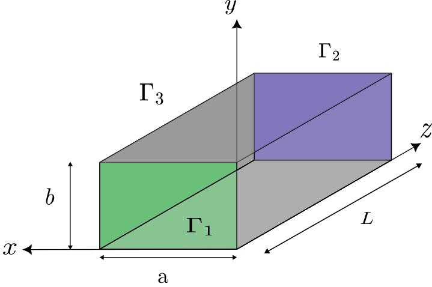
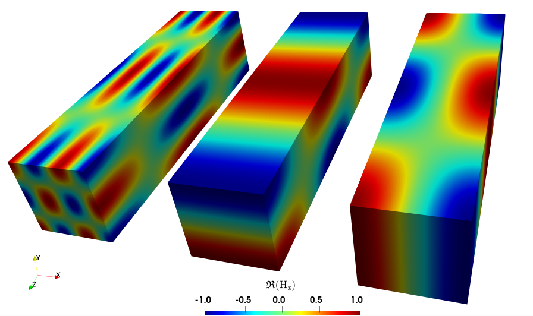
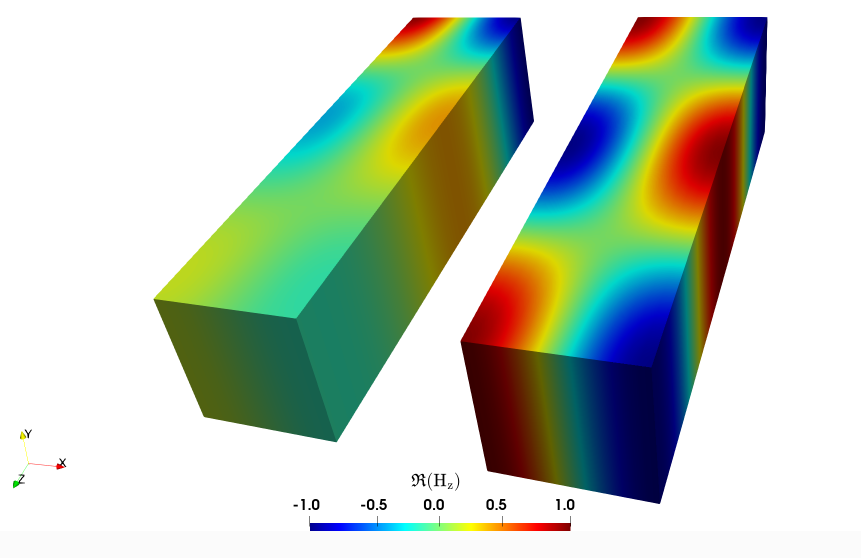
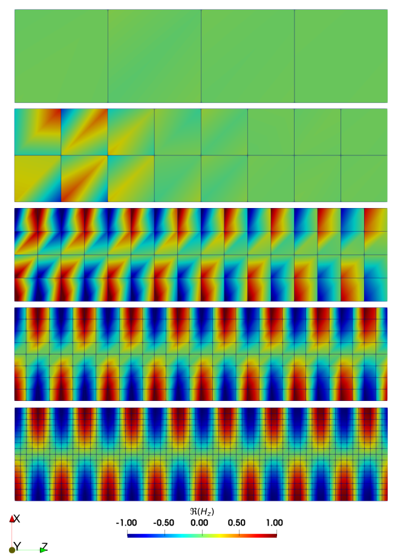
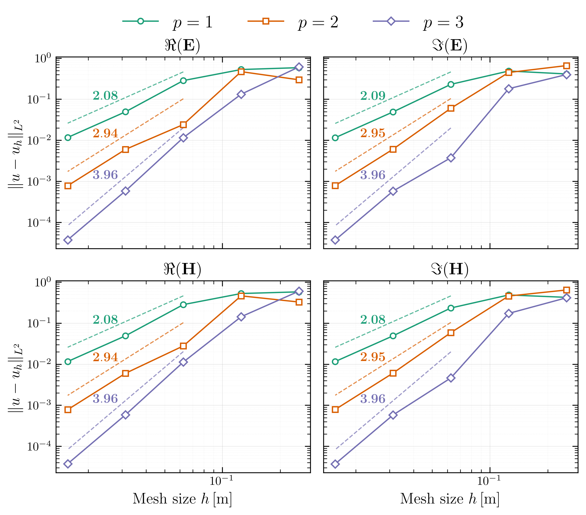

Waveguide#
This example is used to verify the implementation of the electromagnetic solver. It considers the propagation of an electromagnetic (EM) wave in a waveguide, a problem for which an analytical solution is available, thereby allowing us to assess whether the method recovers the expected order of convergence.
Features#
Solvers:
lethe-fluidorlethe-fluid-matrix-freeSteady-state problem
Use of discontinuous Petrov-Galerkin (DPG) method
Files Used In This Example#
The file mentioned below is located in the example’s folder (examples/multiphysics/waveguide).
Base case parameter file (\(\mathrm{f=2.45 GHz}\) and \(\mathrm{TE}_{10}\)):
waveguide.prm
Description of the Case#
Geometry#
The simulated waveguide has a square cross section. It is made of four perfectly conductive lateral walls, an inlet port for the wave’s entry, and an outlet for its exit as shown in the figure below. The wave propagates along the \(z\)-axis.
{kind=link}

The dimensions chosen here are a width \(a = 0.25 \, \mathrm{m}\), a height \(b = 0.25\, \mathrm{m}\) and a length \(L = 1\, \mathrm{m}\).
Physical Problem#
Note
Lethe time-harmonic solver always solves the set of equations in a dimensionless form; therefore, the same convention will be used in the following mathematical descriptions.
This simulation computes the stationary electromagnetic field in the waveguide filled with void. We recall that the time-harmonic Maxwell equations in their dimensionless form, as used in this example, are:
with the parameters of the problem:
Dielectric characteristics of the medium : \(\mu_{\mathrm{r}}\) the relative permeability and \(\varepsilon_{\mathrm{r,eff}}\) the effective relative permittivity. This characteristic is noted “effective” because it takes into account the electric conductivity.
Excitation: \(\mathbf{J}\) the current density and \(\omega = \frac{L2\pi f}{c}\) the angular frequency of the electromagnetic wave normalized by the speed of light in the void \(c\).
When solving a time-harmonic electromagnetic problem with Lethe, there are 12 unknowns: six for \(\mathbf{E}\) and \(\mathbf{H}\) fields (the real and imaginary parts in each of the three spatial directions).
In addition, to describe an electromagnetic wave problem, it is useful to introduce the following dimensionless wavenumbers to ease notation in the following parts of this example:
Wavenumbers corresponding to a standing wave caused by the walls: \(k_\mathrm{x} = \frac{Lm\pi}{a} \ , \ k_\mathrm{y} = \frac{Ln\pi}{b}\)
Wavenumber in the transverse direction of propagation: \(k_\mathrm{c} = \sqrt{k_\mathrm{x}^2 + k_\mathrm{y}^2}\)
Total wavenumber: \(k = \omega \sqrt{\mu_{\mathrm{r}} \varepsilon_{\mathrm{eff,r}}} = \sqrt{k_\mathrm{x}^2 +k_\mathrm{y}^2 + k_\mathrm{z}^2}\)
Wavenumber corresponding to a wave propagating along the \(z\)-axis: \(k_\mathrm{z} = \sqrt{\omega^2 \varepsilon_\mathrm{eff,r}\mu_\mathrm{r} - k_\mathrm{c}^2}\)
Note
Note that if \(k \leq k_\mathrm{c}\), the wave does not propagate because \(k_\mathrm{z}^2 \leq 0\). This remark is important for the following part on the frequency and the different modes.
In Lethe, the electromagnetics solver is enabled within the multiphysics subsection of the parameter file. We also disable the fluid dynamics solver there since it is enabled by default.
subsection multiphysics
set fluid dynamics = false
set electromagnetics = true
end
The Different Transverse Modes And The Frequency Modification#
\(\mathrm{TE}_{mn}\) mode refers to “Transverse electric mode”. This means that regardless of the values of \(m\) and \(n\), the \(z\)-component of \(\mathbf{E}\) is always zero. Therefore, the pair \((m,n)\) refers to the \(x\)-component of the electric field being excited in the \(m\)-th mode and the \(y\)-component of the electric field being excited on the \(n\)-th mode.
The \(\mathrm{TE}_{mn}\) modes can be specified in the subsection waveguide mode of the parameter file. Here we used the following:
subsection time harmonic maxwell
set electromagnetic frequency = 2.45e9
set number of waveguide inlets = 1
subsection waveguide inlet 0
set port boundary id = 4
set corner 0 = 0,0,0
set corner 1 = 0.25,0,0
set corner 2 = 0, 0.25, 0.
set corner 3 = 0.25, 0.25, 0.
subsection waveguide mode
set mode type = TE
set mode order m = 1
set mode order n = 0
end
end
end
To apply a transverse magnetic mode, simply modify the mode type with “TM”.
The frequency of the inlet is originally set to \(f = \mathrm{2.45}\, \mathrm{GHz}\) because it is the nominal frequency of microwave reactors in the industry. You can modify the electromagnetic frequency to change this value.
Here, since we are in a waveguide, we set the number of waveguide inlets to 1. This inlet must be assigned a port boundary id so that the solver knows on which boundary to apply the inlet condition (here, the boundary ID is 4).
The solver also needs to know the corner points where the inlet boundary is applied so that it can map the mode type to the user-expected direction and determine the dimensions of the mesh for a priori computation. The positions of the points corner 0, corner 1, corner 2, and corner 3 must therefore match the coordinates of the rectangular waveguide inlet. In addition, the segment from corner 0 to corner 1 defines the first transverse vector (i.e., it is associated with the mode order m), while the segment from corner 0 to corner 2 defines the second transverse vector (i.e., it is associated with the mode order n).
Caution
If \(\mathrm{TE}_{mn}\) or \(f\) is changed, the wavenumber \(k_\mathrm{z} = \sqrt{\omega^2 \varepsilon_{\mathrm{eff,r}}\mu_\mathrm{r} - k_\mathrm{x}^2 - k_\mathrm{y}^2 }\) specified in the subsection analytical solution, the dimensionless admittance real part \(Y_\mathrm{s}=\frac{1}{Z_\mathrm{s}}=\frac{k_\mathrm{z}}{\omega \mu_\mathrm{r}}\) specified within the subsection surface admittance real part must be changed because it depends on \((m,n)\) and \(f\) through \(k_\mathrm{x} = \frac{m \pi}{a}\), \(k_\mathrm{y} = \frac{n \pi}{b}\) and \(\omega\).
Warning
The simulation may not run for low frequencies or high modes. You have to adapt one of these parameters in order for \(k_z\) to keep a real value. Indeed, the number \(k_z^2 = \omega^2 \varepsilon_{\mathrm{eff,r}}\mu_\mathrm{r} - k_x^2 - k_y^2\) cannot be negative.
Here are Paraview visuals of different modes. In order to maximise the resolution, we calculated the parameters with \(\lambda = L = 1\, \mathrm{m}\), which is equivalent to fix the dimensionless parameter \(k_\mathrm{z} = 2\pi\). This represents only one spatial period of the wave. Results of \(\mathrm{TE}_{32}\), \(\mathrm{TE}_{01}\) and \(\mathrm{TE}_{10}\) (respectively, from left to right) are presented below:
{kind=link}

Boundary Conditions#
Attention
Although we are not using the fluid solver, note that we cannot remove the subsection boundary conditions for the fluid boundaries in the parameter file otherwise the simulation fails to execute.
There are three types of boundary conditions in this problem, this explains why the surfaces of the waveguide are sorted in three groups. First, there is the inlet \(\Gamma_1\), then the outlet \(\Gamma_2\) and finally the metal walls \(\Gamma_3\).
Inlet \(\Gamma_1\):
waveguide portboundary condition at the inlet of the waveguide to excite the \(\mathrm{TE}_{mn}\) mode at \(z\) = 0Outlet \(\Gamma_2\):
impedance boundarycondition tuned to the waveguide impedance to minimize the reflections (the waveguide is theoretically infinite). The dimensionless admittance in such conditions is:\[Y_\mathrm{s} = \frac{1}{Z_\mathrm{s}}=\frac{k_\mathrm{z}}{\omega \mu_\mathrm{r}} = \frac{k_\mathrm{z} c}{2\pi f \mathrm{L} \mu_\mathrm{r}} \approx 0.968987646\]Caution
Changes in mode will affect the value of he dimensionless admittance.
Metal walls \(\Gamma_3\):
pec(perfect electric conductor) boundary conditions
These translate into the three following equations:
These boundary conditions are specified within the boundary conditions time harmonic maxwell subsection of the parameter file:
subsection boundary conditions time harmonic maxwell
set number = 3
subsection bc 0
set id = 0, 1, 2, 3,
set type = pec
end
subsection bc 1
set id = 4
set type = waveguide port
end
subsection bc 2
set id = 5
set type = impedance boundary
subsection excitation x real part
set Function expression = 0
end
subsection excitation x imag part
set Function expression = 0
end
subsection excitation y real part
set Function expression = 0
end
subsection excitation y imag part
set Function expression = 0
end
subsection excitation z real part
set Function expression = 0
end
subsection excitation z imag part
set Function expression = 0
end
subsection surface admittance real part
set Function expression = 0.968987646
end
subsection surface admittance imag part
set Function expression = 0.
end
end
end
Dimensionless Analytical Solution#
The solution for a \(\mathrm{TE}_{mn}\) mode, which will be used to assess convergence for this test case, is given by:
The solution used for the calculation of the convergence rates is specified in the analytical solution subsection of the parameter file:
subsection analytical solution
set enable = true
set verbosity = verbose
subsection electromagnetics
set Function constants = k = 51.348203, k_x = 12.5663706, k_z = 49.78678822
set Function expression = 0. ; (-k/k_x)* sin(k_x*x) * sin(k_z*z); 0.;0; (k/k_x)* sin(k_x*x) * cos(k_z*z); 0; (k_z/k_x)* sin(k_x*x) * sin(k_z*z); 0.; cos(k_x * x)*cos(k_z*z) ; -(k_z/k_x)* sin(k_x*x) * cos(k_z*z); 0.; cos(k_x * x) *sin(k_z*z)
end
end
Mesh Adaptation#
In this tutorial, we want to perform a convergence analysis. Therefore, the mesh needs to be successively refined uniformly across the domain. This is achieved with the subsection mesh adaptation, by setting the type to be uniform:
subsection mesh adaptation
set type = uniform
end
and by changing the number n of mesh adaptations in the subsection simulation control:
subsection simulation control
set method = steady
set output frequency = 1
set output path = ./degree_1/
set number mesh adapt = n
end
If you try a new order \(m\), you can change the name of the path with set output path = ./degree_m/.
Note
The output folder specified with
output pathis automatically created when the simulation is run if it does not already exist.A typical computer with 12 cores and 64 Gb of RAM can compute up to 3 mesh adaptations, after that the systems becomes too heavy in memory.
Degree of the FEM Solver#
You can also change the degree of the polynomials used in the Finite Element Method (FEM) in subsection FEM:
subsection FEM
set electromagnetics trial degree = 1
set electromagnetics test degree = 2
end
Caution
The time-harmonic Maxwell solver requires the degree of the test space to always be greater than the degree of the trial space. Consequently, if the trial space degree is increased, the test degree also needs to be increased.
Physical Properties#
You can also change the electromagnetic properties of the medium at the subsection physical properties. Here are the default settings for the void:
subsection physical properties
set number of fluids = 1
subsection fluid 0
set electric conductivity model = constant
set electric conductivity = 0.
set electric permittivity model = constant
set electric permittivity real part = 1.
set electric permittivity imag part = 0.
set magnetic permeability model = constant
set magnetic permeability real part = 1.
set magnetic permeability imag part = 0.
end
end
Adding an imaginary part to the permeability and the permittivity makes the medium dissipative.
Here is a comparison of the result in a dissipative medium (left) with \(\Im(\mu_\mathrm{r})=0.06 \ , \ \Im(\varepsilon_\mathrm{eff,r})=0.06\) and a non-dissipative one (right):
{kind=link}

Running The Simulation#
Call lethe-fluid by invoking:
mpirun -np 10 lethe-fluid waveguide.prm
to run the simulation using ten CPU cores.
Warning
Make sure to compile lethe in Release mode and run in parallel using mpirun. With three mesh adaptations, this simulation takes \(\sim \,6\) minutes on \(10\) processes.
Tip
Alternatively, the application lethe-fluid-matrix-free can be used to run the simulation (mpirun -np 10 lethe-fluid-matrix-free waveguide.prm). For three mesh adaptation, it takes \(\sim \, 6\) minutes on \(10\) processes. Indeed, using the matrix free solver does not affect the cacluation time because the time harmonic solver is not affected by the matrix free option.
Results and Discussion#
The following figure shows the \(\Re(\mathbf{H}_\mathrm{z})\) field of 4 increasing mesh adaptations (set number mesh adapt = 4) with the default settings of the waveguide.prm file. As expected, with decreasing element size, we capture more and more the oscillating behavior of the solution.
{kind=link}

Here is the error of the default setting simulation in function of the element size (\(h\)) and the polynomial degree (\(p\)):

As expected, the error is \(\mathcal{O}(h^{p+1})\) in the \(\|L^2\|\) norm for the interior trial space, which verifies the implementation of the solver.